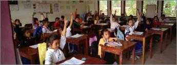

%1
This photograph was taken in the early morning in the city of Trinidad in central Cuba, with a Hasselblad X-pan camera. There were several locations in Trinidad that lent themselves to framing the image and waiting to see what occurred, and then pressing the shutter. Photographing in Trinidad in the early morning is the best time for the shadows to be a significant photographic element. Trinidad is a UNESCO World Heritage site due to its large number of historic and architectural sights that are untouched after two centuries. Click image to enlarge. |
|||
Trinidad, in central Cuba, is known for the soft quality of the morning light. Thus, when I saw this mottled yellow wall, I waited for someone to walk into the picture to complete the image. This condition of this yellow wall is not intentional, but a result to the government's lack of funds to maintain the colonial buildings in Trinidad. It is this colonial heritage that has lead to the city of Trinidad being designated as a UNESCO World Heritage Site. Click image to enlarge. |
|||
This photograph is taken from the top of the bell tower of a former church in the central Cuban town of Trinidad. The city has been designated as a UNESCO World Heritage site due to the large number of historic and architectural sites remaining from the city's colonial past. This photograph was taken using a Hasselblad X-pan. Click image to enlarge. |
|||
Each year around the full moon in late October/November, the monks from all the monasteries in Luang Prabang, Laos come to Wat Ho Siang to communally collect alms from the community. This panoramic image was created with a Hasselblad X-pan camera. Click image to enlarge. |
|||
The monks in Luang Prabang, Laos are very colorful in their saffron and red colored robes. There is no significance to the color of the robes. We think these monks lead a very ascetic life, but the monk on the left was smoking a moment before I took the photograph with my Hasselblad X-pan. I wanted him with the cigarette in his hand, but as soon as I lifted the camera to my eye, he threw the cigarette down! Click image to enlarge. |
|||
At dawn each morning the monks from the monasteries in Luang Prabang, Laos come out onto the streets to seek food and alms from the residents of the town. When I took this photograph in 2002 it still seemed to be a quiet event, but on this last trip in 2007, it had become much more of a tourist event. This image was made with a Hasselblad X-pan camera. Click image to enlarge. |
|||
An advantage of the panoramic format of the Hasselblad X-pan camera is the ability to tell several stories in one photograph. This image was taken inside Wat Ho Siang durning the annual lunar fall festival in Luang Prabang, Laos. Click image to enlarge. |
|||
While many children in the cities in Laos, like here in Luang Prabang, many children in the poorer rural areas do not. This panoramic photograph was taken with a Hasselblad X-pan camera. Click image to enlarge. |
|||
These children in a small rural village outside of Luang Prabang, Laos are enjoying playing inside during a rainy day. This panoramic photograph was made with a Hasselblad X-pan camera. Click image to enlarge. |
|||
This vertical panoramic photographic of a young monk in Luang Prabang was made with a Hasselbad X-pan camera. Many boys live in the monasteries in order to go to school, since the government cannot provide education to all its youth. Many young men leave the monasteries after receiving an education. Click image to enlarge. |
|||